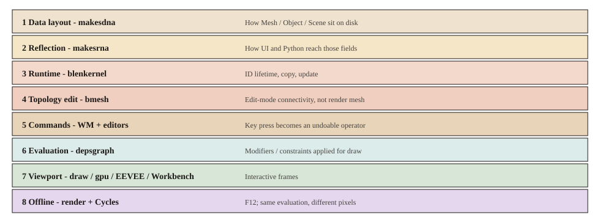

投影 2
按职责分层
同一份目录，按「这一层保证什么」切开。上层可以调用下层，不要绕过命令层直接改绘制缓存。每层下面补了关键符号，方便对着源码跟。

flowchart TB dnaLayer[DNA_layout] rnaLayer[RNA] bkeLayer[BKE] bmeshLayer[BMesh] cmdLayer[WM_command] uiLayer[UI] evalLayer[depsgraph] viewLayer[viewport] offLayer[F12] dnaLayer --> rnaLayer --> bkeLayer bkeLayer --> bmeshLayer cmdLayer --> bmeshLayer uiLayer --> cmdLayer uiLayer --> rnaLayer cmdLayer --> evalLayer evalLayer --> viewLayer evalLayer --> offLayer
数据布局
makesdna、blenloader。保证文件里有稳定结构，不管按钮长什么样。DNA_mesh_types.h 的 verts_num 会进 .blend；MeshRuntime 明确不进。读文件：BLO_read_from_file → 对齐 DNA1 → DNA_struct_reconstruct。
属性反射
makesrna。保证 UI 和 Python 用同一套名字读写字段。RNA_def_property_*_sdna 绑 offset；写完走 RNA_property_update，默认 DEG_id_tag_update。禁止：面板里直接 mesh->verts_num =。
运行时对象
blenkernel、geometry。保证 ID 活着、Mesh 合法。Main 是链表库，不是场景树。Object.data 指向 Mesh ID。
拓扑编辑
bmesh。保证编辑模式能高效改连接关系。半边挂在 MeshRuntime.edit_mesh。挤出走 BMO_op_exec(..., "extrude_face_region")，不写 DNA 数组。
命令
windowmanager 与 editors/*。保证一次用户动作可执行、可撤销、可重复。WM_main 进循环前先 refresh depsgraph；handler 里 wm_operator_invoke → poll / invoke / exec。禁止：引擎回调里改拓扑。
UI
bl_ui、space_view3d。保证人能看见属性和视口工具，不负责算光。layout.prop 落到 rna_uiItemR（rna_ui_api.cc）。View3D 的 art->draw = view3d_main_region_draw。
依赖求值
depsgraph、modifiers。保证绘制/渲染拿到「应用过修改器的世界」。几何操作节点跑 BKE_object_eval_uber_data → mesh_calc_modifiers / editbmesh_calc_modifiers。禁止：点「添加修改器」时立刻变形基网格。
视口绘制
draw、gpu、EEVEE、Workbench。保证交互帧。view3d_draw_view 里 CTX_data_expect_evaluated_depsgraph，再 DRW_draw_view。overlay 不是 RenderEngineType。
离线渲染
render、Cycles。保证 F12 出图。与视口共享求值，不共享 Draw Manager。RENDER_OT_render → RE_RenderFrame → RE_engine_render。
和邻居的边界
| 层 | 保证 | 禁止绕过 |
|---|---|---|
| 命令 | 可撤销的一次动作 | draw 缓存里改顶点 |
| 求值 | 修改器已叠到副本 | F12 直接读 edit_mesh |
| 视口 | 交互帧 + overlay | 自己跑 mesh_calc_modifiers |
设计选择
改顶点发生在命令 + 拓扑层（图上 4–5）。视口只看求值结果。
常见误解
「渲染」不是一层。视口是第 7 层，F12 是第 8 层，中间隔着求值。
源码符号
WM_main · BKE_object_eval_uber_data · DRW_draw_view · Q037